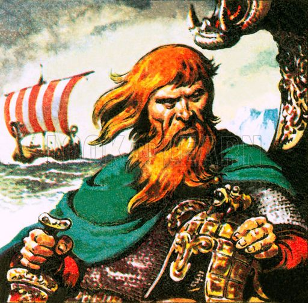
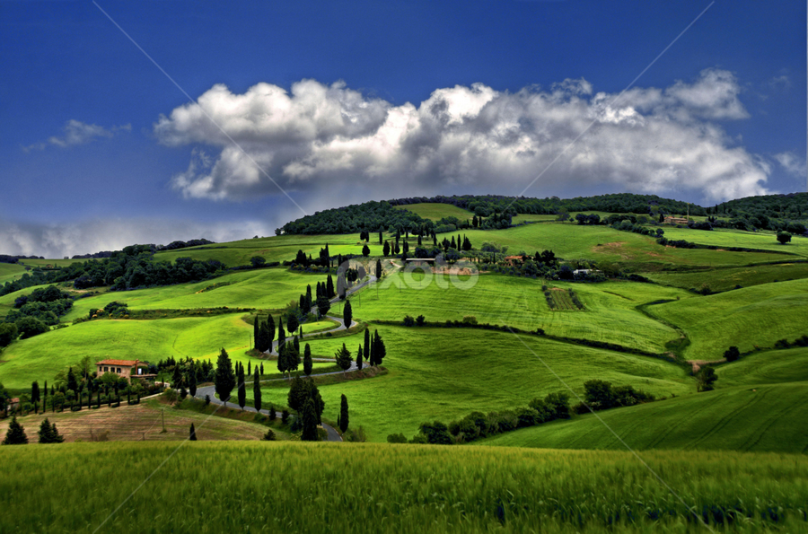

Erik the Red
The First Jarl of Greenland!
- Erik Thorvaldsson (known as Eiríkr Þorvaldsson in Old Norse) lived from 950 to 1003 AD. He was born in Rogaland on the southwestern tip of Norway to Thorvald Asvaldsson.
- He sailed 700 miles from his home country of Norway to Iceland with his father after being convicted of some murders and banished.
- Once he got to Iceland, Erik settled down, bought a farm that he called Eiríksstaðir, and married a woman named Thjodhild (also know as Thjodhild Ship-Bosom).
- After some years, Erik got in trouble again when some of his slaves accidentally caused an avalanche that crushed his neigbor's house. The neighbor, not terribly pleased about this mistake, got together some friends, and killed all of Erik's slaves with an axe. Upon hearing the news, Erik retaliated by killing him in return. His neighbor's friend, and clan's bodyguard, challenged Erik to a duel in retaliation, but was also killed.
- The local town council, noting Erik's distinct lack of give a $*%&, labeled him a lesser outlaw and gave him three years to get his affairs together and leave Iceland. During this time, another neighbor by the name of Thorgest asked to borrow his setstokkr, a kind of large beam with Viking symbols that held mystical value. A few months later, when Erik asked for them back, Thorgest refused. Erik took them back, and headed back home. He knew Thorgest wouldn't take this sitting down, so he set up an ambush for him, and "accidentally" killed two of his sons.
- After another town meeting, Erik was upgraded from lesser outlaw to full outlaw, which meant he had to give up all his land and property, and leave the country immediately. In addition, no Icelander was allowed to help him at all, and any person with the will for it could kill him on sight without any penalty.
- Erik decided he wanted to check out an island that was discovered 70 years earlier by Gunnbjörn Ulfsson, who immediately left after discovering it because all he found was ice. 20 years later, another Norseman named Snæbjörn Galti tried to settle the new land, but met with disaster when the entire village ended up killing each other off.
- It took Erik and his family five days to sail 900 miles from Iceland, through massive storms and around huge glaciers, with an old Norse ship. When he finally arrived on the eastern side of the island, he wasn't impressed with the landscape, so sailed around to the southernmost tip, to a fjord now known as Tunulliarfik. Here, he found fertile valleys similar to Iceland that could foster growth and prosperity. 
- He spent the next three years exploring the island, mapping out the good areas for settlements, and naming various places after himself. Then, he came up with a brilliant plan. Erik new his exile would have just expired, so he could return to Iceland. And here, he had this great big island with more land than he could ever manage on his own. He decided it would be great to have a bunch of his old buddies come along and start a new country. He decided to call it Greenland, because anyone who heard of it would surely want to move there.
- His plan was so effective that the next summer after sailing back to Iceland, he convinced more than 400 people to load up 25 ships to sail back with him. Many of these were lost to storms or turned back, and eventually only 14 arrived to establish the Eastern (Eystribyggð) and Western (Vestribyggð) settlements.
- Not surprisingly, considering Erik's tenacity, the settlements thrived, and he ruled them as the first Jarl of Greenland. They did so well, in fact, that there were even additional settlers over the years. At it's peak, Greenland featured over 300 farms, and was home to about 4,000 people. Unfortunately, in around 1450 AD, the climate changed and Greenland became too cold for livestock, forcing the remaining population to find new lands.
- Erik managed to rule Greenland for about 15 years. He eventually died of illness in 1001 AD. Proof that a determined individual can do amazing things, even if they are a bit crazy!


For more information, see these sources!
Badass of the Week Wikipedia Greenland website Biography.com website